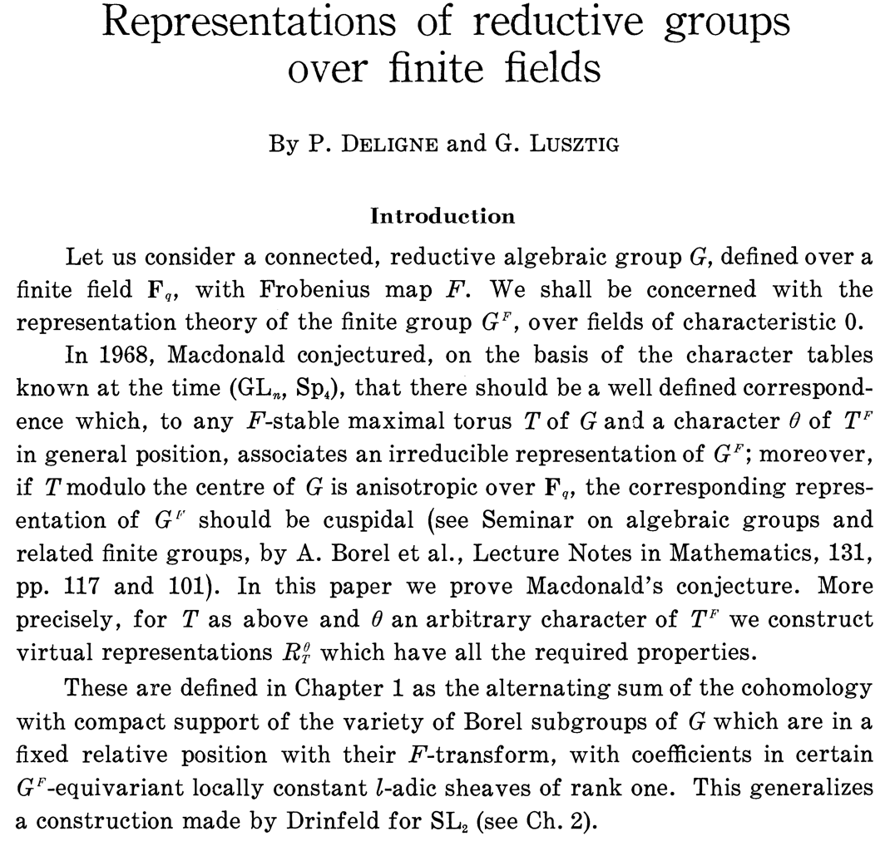

This course will be about the representation theory of SL2(Fq). More precisely, we introduce the representation theory of finite groups of Lie type, and in particular the theory of Deligne–Lusztig, in the specific example of SL2(Fq). Along the way, we will learn a little étale cohomology and modular representation theory, among other things.
Instructor: Patrick Allen
Email:
Time and location: MWF, 2:35 – 3:25 in 1234 BURN.
Office hours: MF 1:30 – 2:30 in 1107 BURN.
Prerequisites: Graduate level algebra. Some experience with algebraic geometry and homological algebra will be useful.
Evaluation: There will be homeowork and a final presentation.
We will closely follow Cédric Bonnafé's book, Representations of SL2(Fq).
The orginial article of Deligne and Lusztig is Representations of reductive groups over finite fields. For a quick overview of the above article, Serre gave a Bourbaki seminar on it, Représentations linéaires des groupes finis «algébriques».
For basics in representation theory, the book of Fulton and Harris, Representation Theory, a first course is a clasic. For algebraic geometry, two of my favourite references are The rising sea by Vakil and Algebraic geometry Robin Hartshorne (these are both overkill for what we need, but you should probbably learn algebraic geometry anyway). For étale cohomology, James Milne has lecture notes, Lectures on Étale cohomology, and a book Étale cohomology.
I'll add more references if/when I think it might be useful.
Aug 31: Introduction.Notes.
Sept 2: Subgroups of SL2(Fq). Notes.
Sept 4: Conjugacy classes in SL2(Fq).